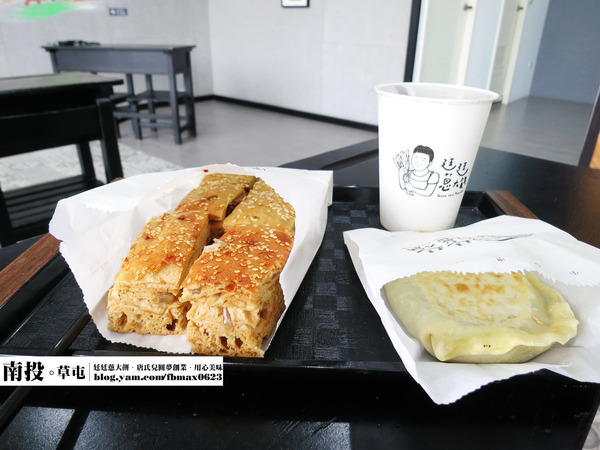
上星期跟一群朋友去吃易鼎活蝦時。 有位朋友的女友推薦在南投草屯有間很厲害的韭菜盒。 除了好吃外，背後還有個很感人的故事。 原來是由一位唐氏兒圓夢創業，內心更加深我的興趣。 昨天剛好有這時間就與好友來草屯品嚐。
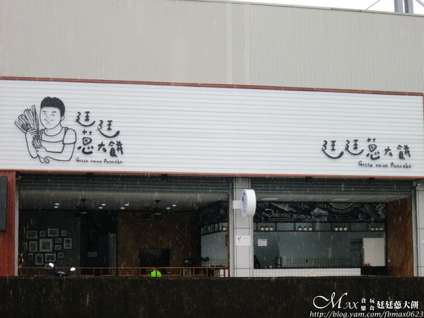 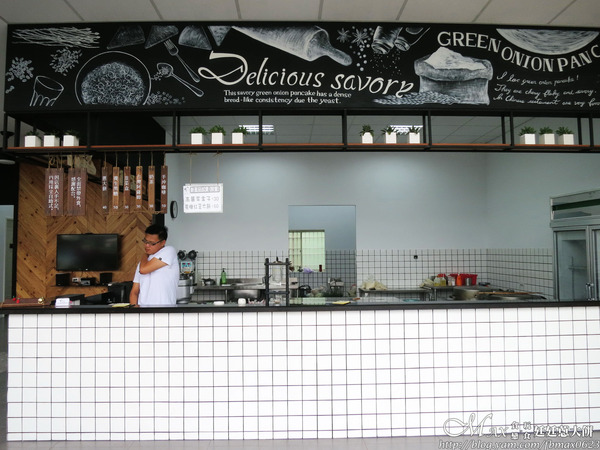店面很大，足足有二間合起來。 上面黑板的塗鴨，有種義大利麵餐廳的錯覺。 商品是每日手工現作，有限一定的量，賣完就沒。 製作的空間完全透明化，環境也很乾淨。
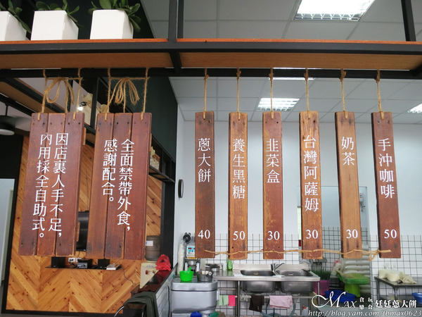 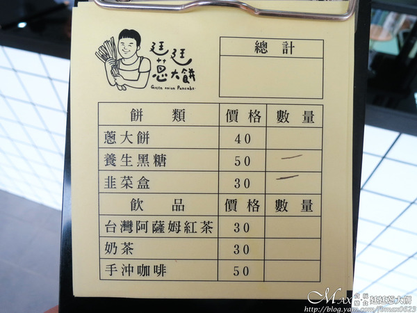賣的商品僅只有三種，蔥大餅、養生黑糖及韭菜盒。 還有一些飲品及手沖咖啡。 菜單上面有個很可愛的男生手拿著蔥，跟廷廷本人很像。
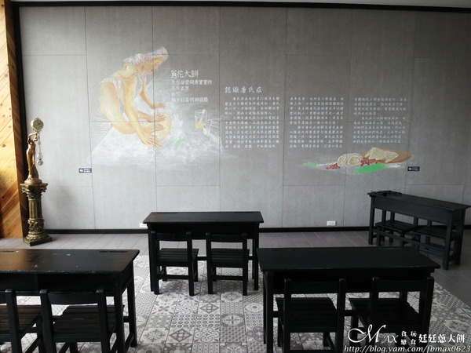 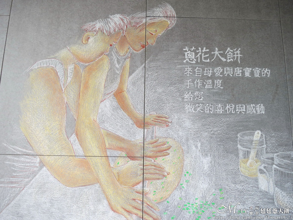用餐區有幾桌的桌椅可供內用，桌椅有沒有很懷念。 就是國小時所用的課桌椅，那時還會中間用粉筆畫線來楚河漢界。 牆上有唐氏症的介紹，還有廷廷學習做蔥大餅的素描，母愛很偉大。
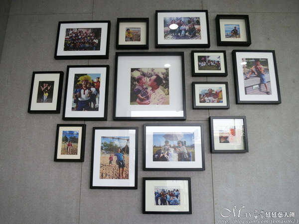另一邊是廷廷從小到大的生活照。 十分開朗的笑容，當天有過來詢問好不好吃。 其實小小的實質讚賞，就是對他最大的鼓勵了。
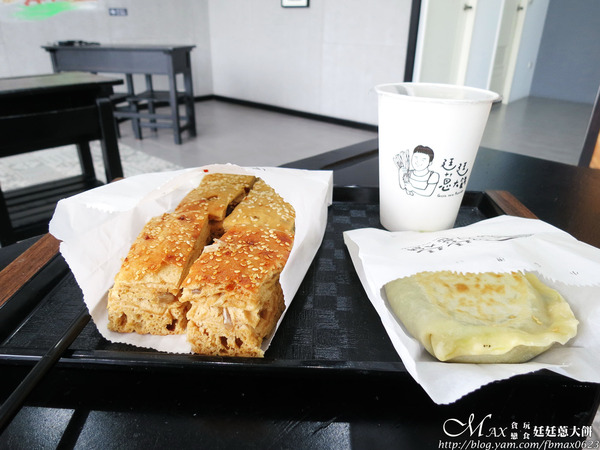我們點了韭菜盒、養生黑糖及阿薩姆紅茶。
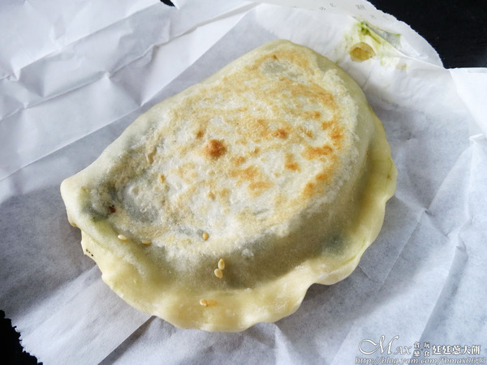 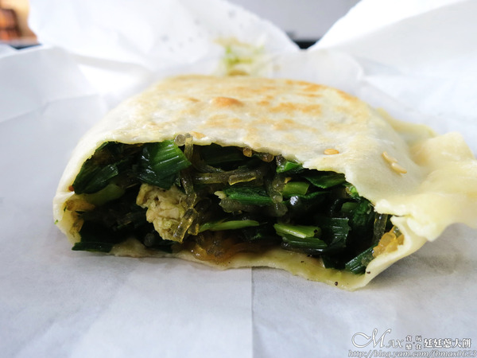在台中吃慣用油煎酥脆的餅皮，第一次吃到廷廷的韭菜盒覺得不同。 使用的是乾烙手法，是正統山東韭菜盒的製作。 餅皮都是現桿的，口感很有彈性。 咬開一看內餡的料滿滿，有韭菜、冬粉、蝦米和蛋皮。 韭菜的香氣夠，吃下來不會有讓人害怕的重韭菜味。 每一口都是真材實料，吃完清爽不油膩，很美味，嗜辣的可別忘了加辣呢！
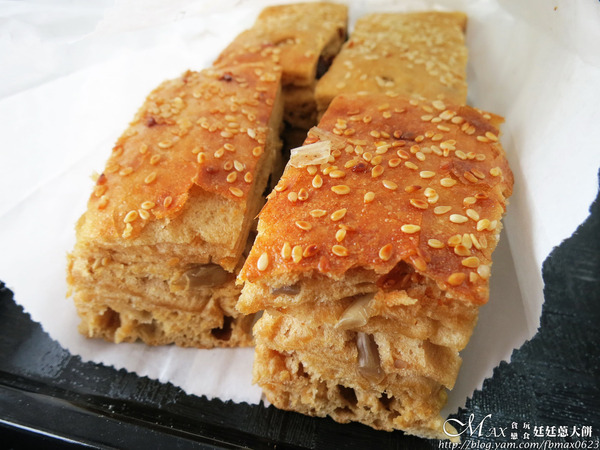 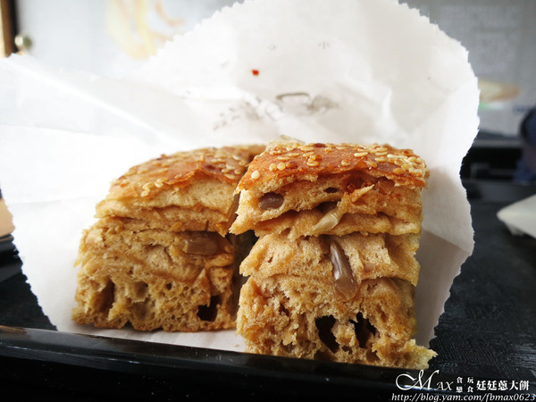養生黑糖是小時候大餅，店家知道要內用，特別切開方便我們分食。 厚度超厚實，是黑糖的口味，表面灑些芝麻。 吃時發現大餅很有嚼勁，黑糖味淡淡的很香。 還吃的到堅果、葡萄乾及蔓越莓，多了一股獨特的風味，令人著迷。
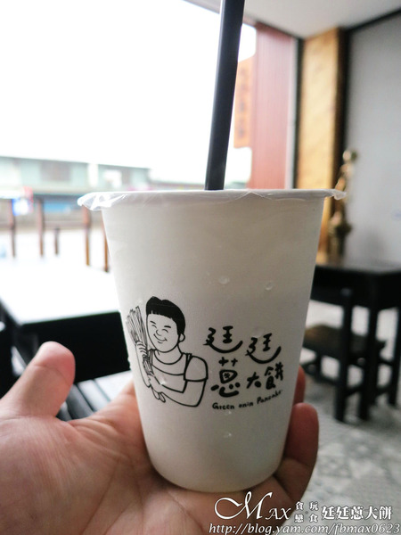阿薩姆紅茶是無糖的，茶香還算濃，也不會澀口。
最後附上廷廷蔥大餅的名片給大家參考。
引自:http://blog.yam.com/fbmax0623/article/112842783